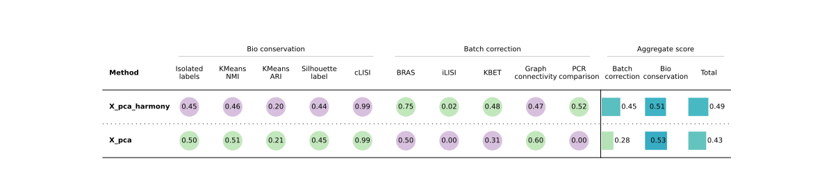
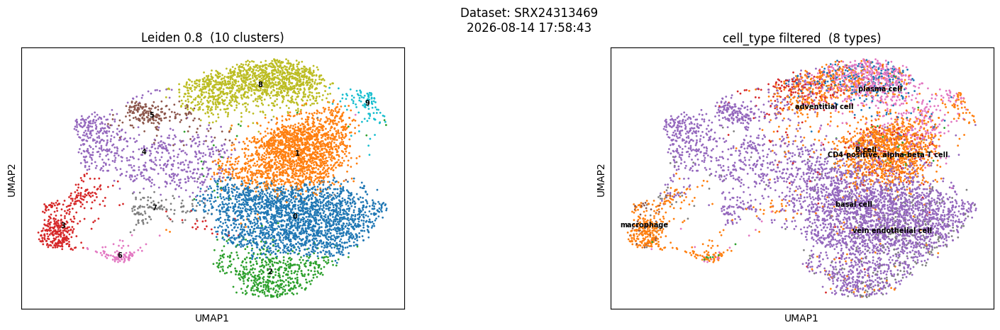
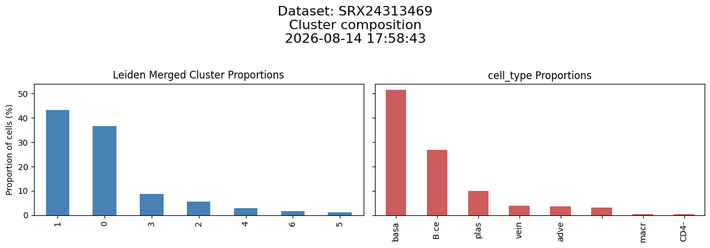
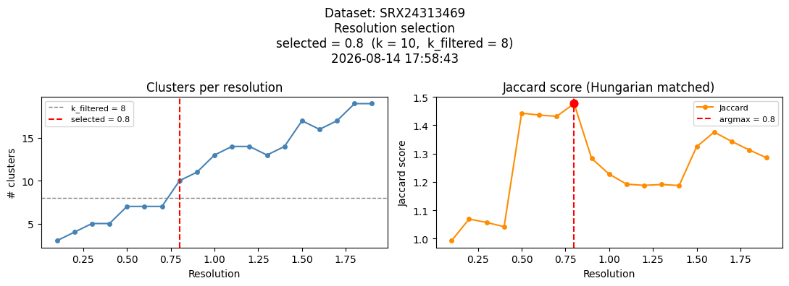
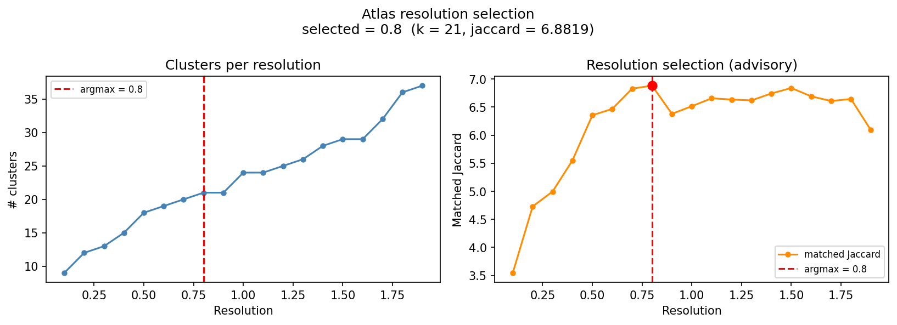
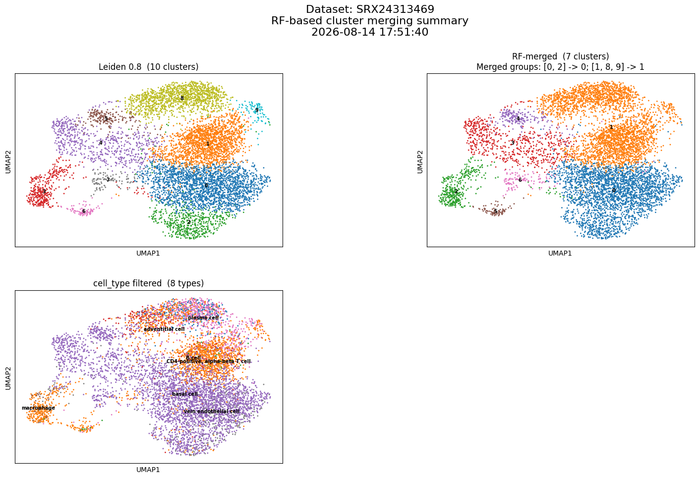

Nygen / Lund University master's project
An integrated lung atlas from agent-curated scBaseCount files
From public 10X matrices to one lung object: quality control, clustering from weak cell-type priors, study-level Harmony.
- 01 Data landscape
- 02 Data acquisition
- 03 Methodology and results
- 04 Limits and next steps
~15 min · numbers and figures from the report unless noted
01 · Landscape
What came before scBaseCount
Three public models. None of them ingest SRA as a uniformly processed 10X store. scBaseCount still has a job across all three.
Loose schemas
Depositors choose how much metadata to send. Many records are thin as sample context. Missing cell_type often starts here.
Community-contributed
Standardized cell-level metadata on submission. Strong for exploration. Not a reprocessing of SRA as a whole.
Lab-harmonized
Selected studies, consensus cell-type maps. The Human Lung Cell Atlas is curated, not exhaustive of SRA.
Agent-curated, uniform matrices
AI discovery and metadata extraction, one STAR reference, one h5ad per SRX. No clusters. No tissue cut. No batch correction.
Clough & Barrett 2016; CZI Cell Science Program 2025; Rozenblatt-Rosen et al. 2017; Sikkema et al. 2023; Youngblut et al. 2025. Report Introduction.
01 · Landscape
Why we built on top of scBaseCount
2.6M cases · 1.9M deaths (2024)
Lung cancer was estimated the most frequent cancer and the leading cause of cancer death. IPF sits in the same tissue with high mortality. The construction problem is still: pick the tissue, share a gene axis, integrate without erasing cell types.
CZI Cell Science Program 2025; Sung et al. 2026; Chakraborty et al. 2022. Report Introduction and Table 1.
02 · Acquisition
Why we built on top of scBaseCount (contd.)
Youngblut et al.: discover public 10X runs, extract metadata, align with one STAR reference. We built an automated solution for concatenationg and QC-ing datasets, applying batch correction and clustering.
Lung gate: free-text tissue regex; drop NRX*; attach BioProject via ENA; drop seven multi-organ studies and studies with ≤1,000 cells. Not a disease filter. Report Methods.
Youngblut et al. 2025; Amid et al. 2020. Report Methods (Data acquisition).
02 · Acquisition
The agent is useful, and it can still miss
SRX17412810: scBaseCount bags IPF, COPD, and healthy control. The BioSample for that tube says COPD.
| srx_accession | SRX17412810 |
|---|---|
| disease | Idiopathic pulmonary fibrosis (IPF), chronic obstructive pulmonary disease (COPD), healthy control |
| tissue | lung |
| disease_ontology_term_id | MONDO:0800504 → idiopathic pulmonary fibrosis MONDO:0005002 → chronic obstructive pulmonary disease |
| tissue_ontology_term_id | UBERON:0002048 → lung |
<BioSample accession="SAMN12688818"> <Title>192CO scRNAseq</Title> <Attributes> <Attribute attribute_name="tissue">Whole Lung Dissociate</Attribute> <Attribute attribute_name="disease">COPD</Attribute> </Attributes> </BioSample>
Illustration of the mismatch class in the report Discussion, not a Table 1 count. That is why we look up ENA / BioSample instead of trusting the agent field alone.
02 · Quality control
Largest cell loss: fewer than 200 genes
1,816 → 1,410 files. 13,013,643 → 9,307,963 barcodes. Among every file that reached QC, the gene-count floor dropped the most cells.
Table 1 denominators. Inside the 1,410 kept files, mito dominates (430,729 vs 145,320 gene-floor). Followed Luecken & Theis 2019; skipped doublet detection and HVG sweeps.
Luecken & Theis 2019. Report Table 1 and Results (concatenated-only drops).
02 · Acquisition
From the 2026-01-12 release to the atlas
datasets in the human GeneFull release
free-text tissue matched lung (after dropping 472 non-SRA/ENA)
eligible after multi-organ and small-study gates · 13,013,643 barcodes
concatenated · 9,307,963 barcodes · 172 studies · 61 cell_type labels
Report Results and Table 1. Mean 7,166 / median 5,112 barcodes per eligible accession. 406 files dropped by file-level gates.
03 · Integration · report Fig 1A
Concatenating QC'd count matrices results in fragmented atlas
UMAP of the concatenated atlas, no batch correction, colored by CZ CELLxGENE cell_type. Shared types split apart. That is the reason to correct.

Report Fig 1A. 9,307,963 barcodes, 61 labels. scBaseCount has no batch key coarser than SRA experiment accession.
03 · Integration
Atlas batch key search
The release has nothing coarser than SRA experiment accession (one file, one batch). We sought to identify a coarser key that would mix studies without flattening cell types.
- A BioProject is one initiative from one organization or consortium (for example PRJNA563828).
- scBaseCount does not ship BioProject. We resolve SRX → ENA study_accession, then Harmony corrects PCs on that column.
Barrett et al. 2012; Amid et al. 2020; Korsunsky et al. 2019. Report Methods (Embedding and batch correction).
03 · Integration · report Fig 1B
After Harmony: cell-type structure is still there
Same pipeline, PCs corrected with BioProject as the batch key. Colored by cell_type, not by cluster ID. B and T lymphocytes, for example, sit in coherent regions.

Report Fig 1B. Harmony: Korsunsky et al. 2019.
03 · Integration · report Fig 2
Batch correction metrics using scIB
Mix studies without flattening cell types. scIB on a 100k BioProject-stratified subset. Cell-type conservation is scored against CXG labels, which barely moved.

Luecken et al. 2022; Korsunsky et al. 2019. Report Fig 2 and Results.
03 · Clustering
Selecting a clustering resolution
Leiden clustering runs at a set of resolutions. For each cluster–cell_type pair we compute the Jaccard index, also known as intersection over union or IoU, then select the optimal matching using SciPy's linear sum assignment. The sweep score is the sum of those matched Jaccard indices.
Jaccard = ∩ / (ncluster + ntype − ∩)
Cluster 0 ∩ macrophage = 80 cells. Cluster 0 has 90 cells; macrophage has 85.
80 / (90 + 85 − 80) = 0.84
- Each matrix cell is that overlap count, not a correlation.
- The assignment keeps one highlighted pair per cluster and per type.
- Score for this matching: 0.84 + 0.67 + 0.75 = 2.26 (can exceed 1).
| Leiden \ type | Macrophage | T cell | B cell | n cluster |
|---|---|---|---|---|
| cluster 0 | 80 (0.84) | 10 | 0 | 90 |
| cluster 1 | 5 | 70 (0.67) | 5 | 80 |
| cluster 2 | 0 | 15 | 60 (0.75) | 75 |
| n type | 85 | 95 | 65 | 245 |
Virtanen et al. 2020; Traag et al. 2019. Report Methods. Same assignment as linear_sum_assignment(-J) in scripts/cluster_validation/metrics.py.
03 · Clustering · report Fig 3A–B
Leiden sweep applied to an example dataset
Example dataset: 67th percentile of cell count.


Report Fig 3. Same release as the atlas.
03 · Clustering · report Fig 3C
The Leiden sweep
Resolutions 0.1–2.0 in steps of 0.1. Keep the resolution that maximizes matched Jaccard against cell_type. On this file that peak is 0.8.

Report Fig 3C.
03 · Clustering
Leiden sweep applied to the atlas (100,000 cell study-stratified sample)
The same methodology was applied to a 100,000 cell study-stratified sample of the atlas. The resolution that maximizes matched Jaccard against cell_type is 0.8.

03 · Clustering
RF merge on the example file, not on the atlas
Method to account for overclustering not yet applied on atlas.

RF merge is not inside the matched Jaccard score. Expression confusion is not the same as cell_type matching: 7 merged clusters vs 8 types. The [1, 8, 9] group is still T cell / B cell / plasma on the type panel. Atlas at resolution 0.8: 71 clusters vs 61 types.
Same 14 Aug run as report Fig 3A. Methods leave RF merge as TODO. scripts/cluster_validation/merge.py.
Takeaways
Limitations and potential next steps
- GEO, CELLxGENE, and HCA each solve a different archive problem. scBaseCount still supplies uniform 10X matrices at SRA scale, including agent holes.
- Large cell counts enable analyses of rare cell types and states. Compiling atlases for research-specific tasks has promise but is not practical with scBaseCount alone.
- Runtimes and disk + memory overhead requirements make this workflow cumbersome
- No doublet detection or HVG count and method optimization
- RF cluster merge shown on single files; not applied to the atlas (71 clusters vs 61 types)
- DGE analysis not performed
Youngblut et al. 2025; Luecken & Theis 2019; Luecken et al. 2022; Korsunsky et al. 2019. Report Table 1, Fig 1–3.